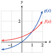
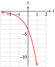
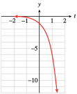
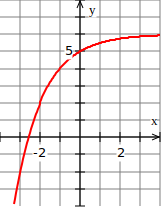
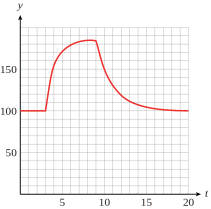

Exercises 3.6 Homework 4.2
¶Find the \(y\)-intercept of each exponential function and decide whether the graph is increasing or decreasing.
1.
\(f (x) = 26(1.4)^x\)
\(g(x) = 1.2(0.84)^x\)
\(h(x)=75\left(\dfrac{4}{5} \right)^x \)
\(k(x)=\dfrac{2}{3}\left(\dfrac{9}{8} \right)^x \)
\(26\text{;}\) increasing
\(1.2\text{;}\) decreasing
\(75\text{;}\) decreasing
\(\frac{2}{3} \text{;}\) increasing
2.
\(M(x) = 1.5(0.05)^x\)
\(N(x) = 0.05(1.05)^x\)
\(P(x)=\left(\dfrac{5}{8} \right)^x \)
\(Q(x)=\left(\dfrac{4}{3} \right)^x \)
Make a table of values and graph each pair of functions by hand on the domain \([-3, 3]\text{.}\) Describe the similarities and differences between the two graphs.
3.
\(f(x)=3^x \)
\(g(x)=\left(\dfrac{1}{3} \right)^x \)
| \(x\) | \(-3\) | \(-2\) | \(-1\) | \(0\) | \(1\) | \(2\) | \(3\) |
| \(f(x)=3^x \) | \(\frac{1}{27} \) | \(\frac{1}{9} \) | \(\frac{1}{3} \) | \(1\) | \(3\) | \(9\) | \(27\) |
| \(g(x)=\left(\frac{1}{3} \right)^x \) | \(27\) | \(9\) | \(3\) | \(1\) | \(\frac{1}{3} \) | \(\frac{1}{9} \) | \(\frac{1}{27} \) |

The two graphs are reflections of each other across the \(y\)-axis. \(f\) is increasing, \(g\) is decreasing. \(f\) has the negative \(x\)-axis as an asymptote, and \(g\) has the positive \(x\)-axis as its asymptote.
4.
\(F(x)=\left(\dfrac{1}{10} \right)^x \)
\(G(x)=10^x \)
5.
\(h(t)=4^{-t} \)
\(q(t)=-4^t \)
| \(t\) | \(-3\) | \(-2\) | \(-1\) | \(0\) | \(1\) | \(2\) | \(3\) |
| \(h(t)=4^{-t} \) | \(64\) | \(16\) | \(4\) | \(1\) | \(\frac{1}{4} \) | \(\frac{1}{16} \) | \(\frac{1}{64} \) |
| \(q(t)=-4^t \) | \(\frac{-1}{64} \) | \(\frac{-1}{16} \) | \(\frac{-1}{4} \) | \(-1\) | \(-4\) | \(-16\) | \(-64\) |
The graphs are reflections of each other across the origin. Both are decreasing, but \(h\) has the negative \(t\)-axis as an asymptote, and \(q\) has the positive t-axis as its asymptote.
6.
\(P(t)=-5^t \)
\(R(t)=5^{-t} \)
Match each function with its graph.
7.
\(f(x)=3(2^x) \)
\(f(x)=3\left(\dfrac{1}{2} \right)^x \)
\(f(x)=3\left(\dfrac{1}{3} \right)^x \)
\(f(x)=3(3^x)\)
I
IV
III
II
8.

\(g(x)=2(1.5^x) \)
\(g(x)=2\left(1.25 \right)^x \)
\(g(x)=2\left(0.75 \right)^x \)
\(g(x)=2(0.25)^x\)
For Problems 9–12,
Use a graphing calculator to graph the functions on the domain \([-5, 5]\text{.}\)
Give the range of the function on that domain, accurate to hundredths.


In each group of functions, which have identical graphs? Explain why.
13.
\(h(x) = 6^x \)
\(k(x)=\left(\dfrac{1}{6} \right)^x \)
\(m(x)=6^{-x} \)
\(n(x)=\dfrac{1}{6^x} \)
Because they are defined by equivalent expressions, (b), (c), and (d) have identical graphs
14.
\(Q(t)=5^t \)
\(R(t)=\left(\dfrac{1}{5} \right)^t \)
\(F(t)=\left(\dfrac{1}{5} \right)^{-t} \)
\(G(t)=\dfrac{1}{5^{-t}} \)
For Problems 15–18,
Use the order of operations to explain why the two functions are different.
Complete the table of values and graph both functions in the same window.
Describe each as a transformation of \(y = 2^x\) or \(y = 3^x\text{.}\)
15.
\(f (x) = 2^{x-1}\text{,}\) \(~g(x) = 2^x - 1\)
| \(x\) | \(y=2^x\) | \(f(x)\) | \(g(x)\) |
| \(-2\) | \(\hphantom{0000} \) | \(\hphantom{0000} \) | \(\hphantom{0000} \) |
| \(-1\) | \(\) | \(\) | \(\) |
| \(0\) | \(\) | \(\) | \(\) |
| \(1\) | \(\) | \(\) | \(\) |
| \(2\) | \(\) | \(\) | \(\) |
To evaluate \(f\) we subtract \(1\) from the input before evaluating the exponential function; to evaluate \(g\) we subtract \(1\) from the output of the exponential function.
-
\(x\) \(y=2^x\) \(f(x)\) \(g(x)\) \(-2\) \(\dfrac{1}{4} \) \(\dfrac{1}{8} \) \(\dfrac{-3}{4} \) \(-1\) \(\dfrac{1}{2} \) \(\dfrac{1}{4} \) \(\dfrac{-1}{2} \) \(0\) \(1 \) \(\dfrac{1}{2} \) \(0 \) \(1\) \(2 \) \(1 \) \(1 \) \(2\) \(4 \) \(2 \) \(3 \)  The graph of \(f\) is translated \(1\) unit to the right; the graph of \(g\) is shifted \(1\) unit down.
16.
\(f (x) = 3^x+2\text{,}\) \(~g(x) = 3^{x+2}\)
| \(x\) | \(y=3^x\) | \(f(x)\) | \(g(x)\) |
| \(-2\) | \(\hphantom{0000} \) | \(\hphantom{0000} \) | \(\hphantom{0000} \) |
| \(-1\) | \(\) | \(\) | \(\) |
| \(0\) | \(\) | \(\) | \(\) |
| \(1\) | \(\) | \(\) | \(\) |
| \(2\) | \(\) | \(\) | \(\) |
17.
\(f (x) = -3^{x}\text{,}\) \(~g(x) = 3^{-x}\)
| \(x\) | \(y=3^x\) | \(f(x)\) | \(g(x)\) |
| \(-2\) | \(\hphantom{0000} \) | \(\hphantom{0000} \) | \(\hphantom{0000} \) |
| \(-1\) | \(\) | \(\) | \(\) |
| \(0\) | \(\) | \(\) | \(\) |
| \(1\) | \(\) | \(\) | \(\) |
| \(2\) | \(\) | \(\) | \(\) |
To evaluate \(f\) we take the negative of the output of the exponential function; to evaluate \(g\) we take the negative of the input.
-
\(x\) \(y=3^x\) \(f(x)\) \(g(x)\) \(-2\) \(\dfrac{1}{9} \) \(\dfrac{-1}{9} \) \(9 \) \(-1\) \(\dfrac{1}{3} \) \(\dfrac{-1}{3} \) \(3 \) \(0\) \(1 \) \(-1 \) \(1 \) \(1\) \(3 \) \(-3 \) \(\dfrac{1}{3} \) \(2\) \(9 \) \(-9 \) \(\dfrac{1}{9} \) 
The graph of \(f\) is reflected about the \(x\)-axis; the graph of \(g\) is reflected about the \(y\)-axis.
18.
\(f (x) = 2^{-x}\text{,}\) \(~g(x) = -2^{x}\)
| \(x\) | \(y=2^x\) | \(f(x)\) | \(g(x)\) |
| \(-2\) | \(\hphantom{0000} \) | \(\hphantom{0000} \) | \(\hphantom{0000} \) |
| \(-1\) | \(\) | \(\) | \(\) |
| \(0\) | \(\) | \(\) | \(\) |
| \(1\) | \(\) | \(\) | \(\) |
| \(2\) | \(\) | \(\) | \(\) |
For the given function, evaluate each pair of expressions. Are they equivalent?
19.
\(f (x) = 3(5^x )\)
\(f (a + 2)\) and \(9f (a)\)
\(f (2a)\) and \(2 f (a)\)
\(3(5^{a+2})\) is not equivalent to \(9\cdot 3(5^a)\text{.}\)
\(3(5^{2a})\) is not equivalent to \(2\cdot 3 (5^a)\text{.}\)
20.
\(g(x) = 1.8^x\)
\(g(h + 3)\) and \(g(h) g(3)\)
\(g(2h)\) and \([g(h)]^2 \)
21.
\(P(t) = 8^t\)
\(P(w)-P(z) \) and \(P(w-z) \)
\(P(-x) \) and \(\dfrac{1}{P(x)} \)
\(8^w - 8^z\) is not equivalent to \(8^{w-z}\text{.}\)
\(8^{-x}\) is equivalent to \(\dfrac{1}{8^x}\text{.}\)
22.
\(Q(t)=5(0.2)^t \)
\(Q(b-1)\) and \(5Q(b) \)
\(Q(a)Q(b) \) and \(5Q(a+b) \)
23.
The graph of \(f (x) = P_0 b^x\) is shown in the figure.

Read the value of \(P_0\) from the graph.
Make a short table of values for the function by reading values from the graph. Does your table confirm that the function is exponential?
Use your table to calculate the growth factor, \(b\text{.}\)
Using your answers to parts (a) and (c), write a formula for \(f (x)\text{.}\)
\(P_0=300\)
\(x\) \(0\) \(1\) \(2\) \(f(x)\) \(300\) \(600\) \(1200\) \(b=2\)
\(f(x)=300(2)^x \)
24.
The graph of \(g(x) = P_0 b^x\) is shown in the figure.

Read the value of \(P_0\) from the graph.
Make a short table of values for the function by reading values from the graph. Does your table confirm that the function is exponential?
Use your table to calculate the decay factor, \(b\text{.}\)
Using your answers to parts (a) and (c), write a formula for \(g(x)\text{.}\)
25.
For several days after the Northridge earthquake on January 17, 1994, the area received a number of significant aftershocks. The red graph shows that the number of aftershocks decreased exponentially over time. The graph of the function \(S(d) = S_0b^d\text{,}\) shown in black, approximates the data. (Source: Los Angeles Times, June 27, 1995)
Read the value of \(S_0\) from the graph.
Find an approximation for the decay factor, \(b\text{,}\) by comparing two points on the graph. (Some of the points on the graph of \(S(d)\) are approximately \((1, 82)\text{,}\) \((2, 45)\text{,}\) \((3, 25)\text{,}\) and \((4, 14)\text{.}\))
Using your answers to (a) and (b), write a formula for \(S(d)\text{.}\)
\(S_0=150\)
\(b\approx 0.55\)
\(S(d) = 150(0.55)^d\)
26.
The frequency of a musical note depends on its pitch. The graph shows that the frequency increases exponentially. The function \(F(p) = F_0b^p\) gives the frequency as a function of the number of half-tones, \(p\text{,}\) above the starting point on the scale

Read the value of \(F_0\) from the graph. (This is the frequency of the note A above middle C.)
Find an approximation for the growth factor, \(b\text{,}\) by comparing two points on the graph. (Some of the points on the graph of \(F(p)\) are approximately \((1, 466)\text{,}\) \((2, 494)\text{,}\) \((3, 523)\text{,}\) and \((4, 554)\text{.}\))
Using your answers to (a) and (b), write a formula for \(F(p)\text{.}\)
The frequency doubles when you raise a note by one octave, which is equivalent to \(12\) half-tones. Use this information to find an exact value for \(b\text{.}\)
Solve each equation algebraically.
27.
\(5^{x+2} = 25^{4/3}\)
\(\dfrac{2}{3} \)
28.
\(3^{x-1} = 27^{1/2}\)
29.
\(3^{2x-1} =\dfrac{\sqrt{3}}{9} \)
\(\dfrac{-1}{4} \)
30.
\(2^{3x-1} =\dfrac{\sqrt{2}}{16} \)
31.
\(4\cdot 2^{x-3} =8^{-2x} \)
\(\dfrac{1}{7} \)
32.
\(9\cdot 3^{x+2} =81^{-x} \)
33.
\(27^{4x+2} =81^{x-1} \)
\(\dfrac{-5}{4} \)
34.
\(16^{2-3x} =64^{x+5} \)
35.
\(10^{x^2-1} =1000 \)
\(\pm 2 \)
36.
\(5^{x^2-x-4} =25 \)
37.
Before the advent of antibiotics, an outbreak of cholera might spread through a city so that the number of cases doubled every \(6\) days.
Twenty-six cases were discovered on July 5. Write a function for the number of cases of cholera \(t\) days later.
Use your calculator to graph your function on the interval \(0 \le t\le 90\text{.}\)
When should hospitals expect to be treating \(106,496\) cases? Use algebraic methods to find your answer, and verify it on your graph.
\(N(t) = 26(2)^{t/6}\)

\(72\) days later
38.
An outbreak of ungulate fever can sweep through the livestock in a region so that the number of animals affected triples every \(4\) days.
A rancher discovers \(4\) cases of ungulate fever among his herd. Write a function for the number of cases of ungulate fever \(t\) days later.
Use your calculator to graph your function on the interval \(0 \le t\le 20\text{.}\)
If the rancher does not act quickly, how long will it be until \(324\) head are affected? Use algebraic methods to find your answer, and verify it on your graph.
39.
A color television set loses \(30\%\) of its value every \(2\) years.
Write a function for the value of a television set \(t\) years after it was purchased if it cost \(\$700\) originally.
Use your calculator to graph your function on the interval \(0 \le t\le 20\text{.}\)
How long will it be before a \(\$700\) television set depreciates to \(\$343\text{?}\) Use algebraic methods to find your answer, and verify it on your graph.
\(V(t) = 700(0.7)^{t/2}\)

\(4\) yr
40.
A mobile home loses \(20\%\) of its value every \(3\) years.
A certain mobile home costs \(\$20,000\text{.}\) Write a function for its value after \(t\) years.
Use your calculator to graph your function on the interval \(0 \le t\le 30\text{.}\)
How long will it be before a \(\$20,000\) mobile home depreciates to \(\$12,800\text{?}\) Use algebraic methods to find your answer, and verify it on your graph.
Use a graph to find an approximate solution accurate to the nearest hundredth.
Decide whether each function is an exponential function, a power function, or neither.
45.
\(g(t)=3 t^{0.4} \)
\(h(t)=4(0.3)^t \)
\(D(x)=6x^{1/2} \)
\(E(x)=4x+x^4 \)
Power
Exponential
Power
Neither
46.
\(R(w) = 5(5)^{w-1} \)
\(Q(w) = 2^w-w^2 \)
\(M(z) = 0.2z^{1.3} \)
\(N(z) = z^{-3} \)
Decide whether the table could describe a linear function, a power function, an exponential function, or none of these. Find a formula for each linear, power, or exponential function.
47.
\(x\) \(y\) \(0\) \(3\) \(1\) \(6\) \(2\) \(12\) \(3\) \(24\) \(4\) \(48\) \(t\) \(P\) \(0\) \(0\) \(1\) \(0.5\) \(2\) \(2\) \(3\) \(4.5\) \(4\) \(8\)
Exponential \(y=3\cdot 2^x\)
Power \(P=0.5 t^2\)
48.
\(x\) \(N\) \(0\) \(0\) \(1\) \(2\) \(2\) \(16\) \(3\) \(54\) \(4\) \(128\) \(p\) \(R\) \(0\) \(405\) \(1\) \(135\) \(2\) \(45\) \(3\) \(15\) \(4\) \(5\)
49.
\(t\) \(y\) \(1\) \(100\) \(2\) \(50\) \(3\) \(33\frac{1}{3} \) \(4\) \(25\) \(5\) \(20\) \(x\) \(P\) \(1\) \(\frac{1}{2} \) \(2\) \(1\) \(3\) \(2\) \(4\) \(4\) \(5\) \(8\)
Power \(y=100 x^{-1}\)
Exponential \(P=\frac{1}{4} \cdot 2^x\)
50.
\(h\) \(a\) \(0\) \(70\) \(1\) \(7\) \(2\) \(0.7\) \(3\) \(0.07\) \(4\) \(0.007\) \(t\) \(Q\) \(0\) \(0\) \(1\) \(\frac{1}{4} \) \(2\) \(1\) \(3\) \(\frac{9}{4} \) \(4\) \(4\)
Fill in the tables. Graph each pair of functions in the same window. Then answer the questions below.
Give the range of \(f\) and the range of \(g\text{.}\)
For how many values of \(x\) does \(f (x) = g(x)\text{?}\)
Estimate the value(s) of \(x\) for which \(f (x) = g(x)\text{.}\)
For what values of \(x\) is \(f (x)\lt g(x)\text{?}\)
Which function grows more rapidly for large values of \(x\text{?}\)
51.
| \(x\) | \(f(x)=x^2\) | \(g(x)=2^x \) |
| \(-2\) | ||
| \(-1\) | ||
| \(0\) | ||
| \(1\) | ||
| \(2\) | ||
| \(3\) | ||
| \(4\) | ||
| \(5\) |
| \(x\) | \(f(x)=x^2\) | \(g(x)=2^x \) |
| \(-2\) | \(4\) | \(\frac{1}{4} \) |
| \(-1\) | \(1\) | \(\frac{1}{2} \) |
| \(0\) | \(0\) | 1 |
| \(1\) | \(1\) | \(2\) |
| \(2\) | \(4\) | \(4\) |
| \(3\) | \(9\) | \(8\) |
| \(4\) | \(16\) | \(16\) |
| \(5\) | \(25\) | \(32\) |
Range of \(f\text{:}\) \([0, \infty)\text{;}\) Range of \(g\text{:}\) \((0, \infty)\)
\(3\)
\(-0.7667\text{,}\) \(2\text{,}\) \(4\)
\((-0.7667, 2) \) and \((4,\infty)\)
g
52.
| \(x\) | \(f(x)=x^3\) | \(g(x)=3^x \) |
| \(-2\) | ||
| \(-1\) | ||
| \(0\) | ||
| \(1\) | ||
| \(2\) | ||
| \(3\) | ||
| \(4\) | ||
| \(5\) |
For Problems 53–60, sketch the graph of each transformation of the given function, then write a formula and check your sketch with a graphing calculator. State the domain and range of each transformation, its intercept(s), and any asymptotes.
53.
\(f(x)=3^x \)
\(y = f (x) - 4\)
\(y = f (x - 4)\)
\(y = -4 f (x)\)
-
\(y = 3^x - 4\)

Domain: \((-\infty, \infty)\text{;}\) range: \((-4, \infty)\text{,}\) \(x\)-intercept \((1.26, 0)\text{;}\) \(y\)-intercept \((0, -3)\text{;}\) horizontal asymptote \(y=-4\)
-
\(y=3^{x-4}\text{,}\)

Domain: \((-\infty, \infty)\text{;}\) range: \((0, \infty)\text{,}\) no \(x\)-intercept; \(y\)-intercept \(\left(0, \dfrac{1}{81}\right)\text{;}\) the \(x\)-axis is the horizontal asymptote.
-
\(y=-4\cdot 3^{x}\text{,}\)
Domain: \((-\infty, \infty)\text{;}\) range: \((-\infty, 0)\text{,}\) no \(x\)-intercept; \(y\)-intercept \((0, -4)\text{;}\) the \(x\)-axis is the horizontal asymptote.
54.
\(g(x)=4^x \)
\(y = g(x) +2\)
\(y = g(x +2)\)
\(y = 2g(x)\)
55.
\(h(t)=6^t \)
\(y = -h(t) \)
\(y = h(-t) \)
\(y = -h(-t) \)
-
\(y =-6^t\)
Domain: \((-\infty, \infty)\text{;}\) range: \((-\infty, 0)\text{,}\) no \(t\)-intercept; \(y\)-intercept \((0, -1)\text{;}\) the \(t\)-axis is the horizontal asymptote.
-
\(y=6^{-t}\text{,}\)
Domain: \((-\infty, \infty)\text{;}\) range: \((0, \infty)\text{,}\) no \(t\)-intercept; \(y\)-intercept \((0, 1)\text{;}\) the \(t\)-axis is the horizontal asymptote.
-
\(y=-6^{-t}\text{,}\)

Domain: \((-\infty, \infty)\text{;}\) range: \((-\infty, 0)\text{,}\) no \(t\)-intercept; \(y\)-intercept \((0, -1)\text{;}\) the \(t\)-axis is the horizontal asymptote.
56.
\(j(t)=\left(\dfrac{1}{3} \right)^t \)
\(y = j(-t) \)
\(y = -j(t)\)
\(y = -j(-t) \)
57.
\(g(x)=2^x \)
\(y = g(x-3) \)
\(y = g(x-3)+4 \)
-
\(y =2^{x-3}\)

Domain: \((-\infty, \infty)\text{;}\) range: \((0, \infty)\text{,}\) no \(x\)-intercept; \(y\)-intercept \(\left(0, \frac{1}{8}\right)\text{;}\) the \(x\)-axis is the horizontal asymptote.
-
\(y=2^{x-3}+4 \text{,}\)
Domain: \((-\infty, \infty)\text{;}\) range: \((4, \infty)\text{,}\) no \(x\)-intercept; \(y\)-intercept \(>\left(0, \frac{33}{8}\right)\text{;}\) horizontal asymptote \(y=4\)
58.
\(f(x)=10^x \)
\(y = f(x+5) \)
\(y = f(x+5)-20 \)
59.
\(N(t)=\left(\dfrac{1}{2} \right)^t \)
\(y = -N(t) \)
\(y = 6-N(t) \)
-
\(y =-\left(\dfrac{1}{2}\right)^t\)

Domain: \((-\infty, \infty)\text{;}\) range: \((-\infty, 0)\text{,}\) no \(t\)-intercept; \(y\)-intercept \((0, -1)\text{;}\) the \(t\)-axis is the horizontal asymptote.
-
\(y=6-\left(\dfrac{1}{2} \right)^t \text{,}\)
Domain: \((-\infty, \infty)\text{;}\) range: \((-\infty,6)\text{,}\) \(t\)-intercept approximately \((-2.58,0)\text{;}\) \(y\)-intercept \((0, 5)\text{;}\) horizontal asymptote is \(y=6\)
60.
\(P(t)=0.4^t \)
\(y = -P(t) \)
\(y = 8-P(t) \)
For Problems 61–64,
Describe the graph as a transformation of \(y = 2^x\text{.}\)
Give an equation for the function graphed.


Match the graph of each function to its formula. In each formula, \(a\gt 0\) and \(b \gt 1\text{.}\)
65.
\(y=ab^x\)
\(y=ab^{-x} \)
\(y=ax^b \)
I
III
II
66.
\(y=ax^{-b}\)
\(y=-ab^{x} \)
\(y=ax^{1/b} \)

67.
The function \(f (t)\) describes a volunteer's heart rate during a treadmill test.
The heart rate is given in beats per minute and \(t\) is in minutes. (See Section 3 to review functions defined piecewise.) (Source: Davis, Kimmet, and Autry, 1986)
-
Evaluate the function to complete the table.
\(t\) \(3.5\) \(4\) \(8\) \(10\) \(15\) \(f(t)\) \(\hphantom{0000}\) \(\hphantom{0000}\) \(\hphantom{0000}\) \(\hphantom{0000}\) \(\hphantom{0000}\) Sketch the graph of the function.
The treadmill test began with walking at \(5.5\) kilometers per hour, then jogging, starting at \(12\) kilometers per hour and increasing to \(14\) kilometers per hour, and finished with a cool-down walking period. Identify each of these activities on the graph and describe the volunteer's heart rate during each phase.
\(t\) \(3.5\) \(4\) \(8\) \(10\) \(15\) \(f(t)\) \(128\) \(154.75\) \(184.05\) \(150.93\) \(103.96\) - 
From \(0\) to \(3\) minutes, the volunteer is walking with heart rate \(100\) beats per minute. The volunteer jogged at a steady pace from \(3\) to \(4\) minutes, and the heart rate increased to about \(155\) beats per minutes. From \(4\) to \(9\) minutes, the jogging pace increased, and the heart rate rose to about \(185\) beats per minute. The cooldown started at \(9\) minutes, and the heart rate decreased rapidly and leveled off to about \(100\) beats per minute.
68.
Carbon dioxide (\(\text{CO}_2\)) is called a greenhouse gas because it traps part of the Earth's outgoing energy. Animals release \(\text{CO}_2\) into the atmosphere, and plants remove \(\text{CO}_2\) through photosynthesis. In modern times, deforestation and the burning of fossil fuels both contribute to \(\text{CO}_2\) levels. The figure shows atmospheric concentrations of \(\text{CO}_2\text{,}\) in parts per million, measured at the Mauna Loa Observatory in Hawaii.
The red curve shows annual oscillations in \(\text{CO}_2\) levels. Can you explain why \(\text{CO}_2\) levels vary throughout the year?
The blue curve shows the average annual \(\text{CO}_2\) readings. By approximately how much does the \(\text{CO}_2\) level vary from its average value during the year?
In 1960, the average \(\text{CO}_2\) level was \(316.75\) parts per million, and the average level has been rising by \(0.4\%\) per year. If the level continues to rise at this rate, what \(\text{CO}_2\) readings can we expect in the year 2100?

For part (a): Why would photosynthesis vary throughout the year?